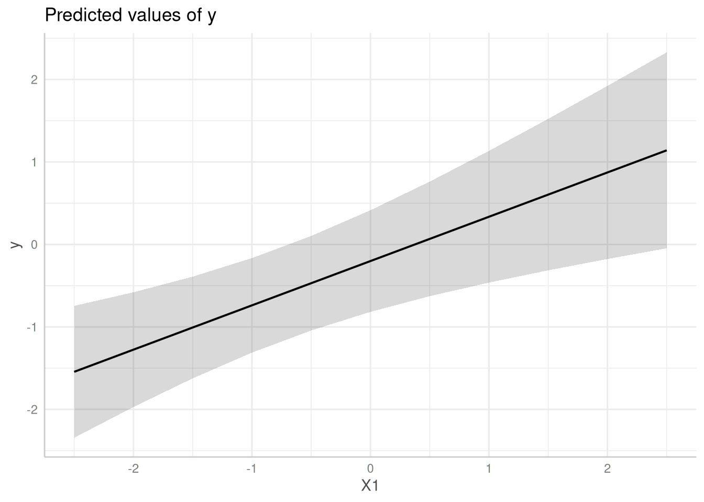

Practical example: (Cluster) Robust Standard Errors
Daniel Lüdecke
2023-05-12
Source:vignettes/practical_robustestimation.Rmd
practical_robustestimation.RmdThis vignette demonstrate how to compute confidence intervals based on (cluster) robust variance-covariance matrices for standard errors.
First, we load the required packages and create a sample data set with a binomial and continuous variable as predictor as well as a group factor.
library(ggeffects)
set.seed(123)
# example taken from "?clubSandwich::vcovCR"
m <- 8
cluster <- factor(rep(LETTERS[1:m], 3 + rpois(m, 5)))
n <- length(cluster)
X <- matrix(rnorm(3 * n), n, 3)
nu <- rnorm(m)[cluster]
e <- rnorm(n)
y <- X %*% c(0.4, 0.3, -0.3) + nu + e
dat <- data.frame(y, X, cluster, row = 1:n)
# fit linear model
model <- lm(y ~ X1 + X2 + X3, data = dat)Predictions with normal standard errors
In this example, we use the normal standard errors, as returned by
predict(), to compute confidence intervals.
ggpredict(model, "X1")
#> # Predicted values of y
#>
#> X1 | Predicted | 95% CI
#> ----------------------------------
#> -2.50 | -1.54 | [-2.42, -0.67]
#> -2.00 | -1.28 | [-2.00, -0.55]
#> -1.00 | -0.74 | [-1.19, -0.29]
#> -0.50 | -0.47 | [-0.81, -0.13]
#> 0.00 | -0.20 | [-0.50, 0.10]
#> 0.50 | 0.07 | [-0.27, 0.41]
#> 1.00 | 0.34 | [-0.10, 0.78]
#> 2.50 | 1.14 | [ 0.28, 2.01]
#>
#> Adjusted for:
#> * X2 = -0.08
#> * X3 = 0.09
Predictions with HC-estimated standard errors
Now, we use sandwich::vcovHC() to estimate
heteroskedasticity-consistent standard errors. To do so, first the
function name, vcovHC(), must be supplied to the
vcov.fun-argument. sandwich::vcovHC(), in
turn, has different types of estimation. This must be specified in
vcov.type.
ggpredict(model, "X1", vcov.fun = "vcovHC", vcov.type = "HC0")
#> # Predicted values of y
#>
#> X1 | Predicted | 95% CI
#> ----------------------------------
#> -2.50 | -1.54 | [-2.41, -0.68]
#> -2.00 | -1.28 | [-1.98, -0.57]
#> -1.00 | -0.74 | [-1.14, -0.34]
#> -0.50 | -0.47 | [-0.77, -0.17]
#> 0.00 | -0.20 | [-0.49, 0.09]
#> 0.50 | 0.07 | [-0.31, 0.44]
#> 1.00 | 0.34 | [-0.17, 0.84]
#> 2.50 | 1.14 | [ 0.15, 2.14]
#>
#> Adjusted for:
#> * X2 = -0.08
#> * X3 = 0.09
Passing a function to vcov.fun
Instead of character strings, the vcov.fun argument also
accepts a function that returns a variance-covariance matrix. Further
arguments that need to be passed to that functions should be provided as
list to the vcov.args argument. Thus, we can rewrite the
above code-chunk in the following way:
ggpredict(
model,
"X1",
vcov.fun = sandwich::vcovHC,
vcov.args = list(type = "HC0")
)
#> # Predicted values of y
#>
#> X1 | Predicted | 95% CI
#> ----------------------------------
#> -2.50 | -1.54 | [-2.41, -0.68]
#> -2.00 | -1.28 | [-1.98, -0.57]
#> -1.00 | -0.74 | [-1.14, -0.34]
#> -0.50 | -0.47 | [-0.77, -0.17]
#> 0.00 | -0.20 | [-0.49, 0.09]
#> 0.50 | 0.07 | [-0.31, 0.44]
#> 1.00 | 0.34 | [-0.17, 0.84]
#> 2.50 | 1.14 | [ 0.15, 2.14]
#>
#> Adjusted for:
#> * X2 = -0.08
#> * X3 = 0.09Predictions with cluster-robust standard errors
The last example shows how to define cluster-robust standard errors.
These are based on clubSandwich::vcovCR(). Thus,
vcov.fun = "vcovCR" is always required when estimating
cluster robust standard errors. clubSandwich::vcovCR() has
also different estimation types, which must be specified in
vcov.type. Furthermore, clubSandwich::vcovCR()
requires the cluster-argument, which must be
specified in vcov.args:
ggpredict(
model, "X1", vcov.fun = "vcovCR", vcov.type = "CR0",
vcov.args = list(cluster = dat$cluster)
)
#> # Predicted values of y
#>
#> X1 | Predicted | 95% CI
#> ----------------------------------
#> -2.50 | -1.54 | [-2.34, -0.75]
#> -2.00 | -1.28 | [-1.97, -0.58]
#> -1.00 | -0.74 | [-1.31, -0.17]
#> -0.50 | -0.47 | [-1.04, 0.10]
#> 0.00 | -0.20 | [-0.82, 0.41]
#> 0.50 | 0.07 | [-0.63, 0.76]
#> 1.00 | 0.34 | [-0.46, 1.13]
#> 2.50 | 1.14 | [-0.05, 2.33]
#>
#> Adjusted for:
#> * X2 = -0.08
#> * X3 = 0.09
me <- ggpredict(
model, "X1", vcov.fun = "vcovCR", vcov.type = "CR0",
vcov.args = list(cluster = dat$cluster)
)
plot(me)